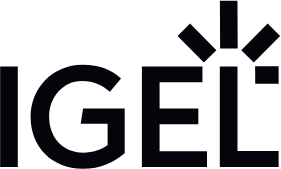

Servus, I'm Cristina Tutunariu
Software & Embedded Developer
About Me

We live in a world quietly powered by invisible engines. From the way we get our news to the systems that manage our cities, automation is woven into the very fabric of modern life. For me, it’s not enough to simply use these tools; I feel a deep-seated need to understand them from first principles. I love building things from the ground up, to truly grasp how something works before I decide how it should be used.
This drive to look inside the "black box" comes with a strong sense of responsibility. Automation is a powerful force, and its impact is never neutral. That’s why I’ve chosen to point my skills toward two of the most fundamentally human domains: health and education.
In medicine, I see a future where technology doesn't replace clinicians but augments them, helping us detect illness with greater speed and precision, and even uncovering novel treatment methodologies that can revolutionize patient care.
In education, I am passionate about building adaptive systems that create personalized learning paths for everyone—not just the gifted, but every student, regardless of their challenges or differences. The goal is a future where technology unlocks potential, ensuring everyone is capable of contributing something meaningful.
These fields are too important for a "move fast and break things" approach. They demand quality over quantity, precision over rapidity. My goal is to be the kind of engineer who builds with intention, creating technology that is not only smart, but also wise.
Working Student at IGEL
Since August 2025
Editorial Tasks
Full-Time Student
Since Oct 2023
Technische Informatik (B.Eng.) at Technical University of Applied Sciences Augsburg
Pursuing a Bachelor of Engineering in Computer Engineering, a hybrid degree merging informatics (software) and electrical engineering (hardware), with a deep focus on the intersection where software controls physical systems.
Key Projects & Papers:
- 3rd Sem: Seminar Paper - AI & Machine Learning in Cloud Environments .
- 4th Sem: Project - Underfloor Heating Puzzle Solver.
- 5th Sem: Project - DrawMeMaybe (Planned).
Technical Skills & Focus Areas:
- Languages: C, C++, Assembler (Basic), VHDL, MATLAB (Basic).
- Focus: Embedded Systems (STM32, C/Assembly), Hardware-Software Integration.
- Tools & Methods: Git (Basic), STM32CubeProgrammer.
Project Work:
Internship and Summer Job
2020 - 2021
During my 11th Grade I completed a part-time internship at KORA Studienzentrum, a research collaboration between Universitätsklinikum Augsburg and Helmholtz Zentrum.
Key Responsibilities & Accomplishments:
- Managed the participant experience, from appointment coordination to providing clear information and assistance.
- Ensured high data integrity through precise entry, maintenance, and retrieval in clinical databases.
- Conducted data collection by administering questionnaires (e.g., on heatwave effects) and organizing the results for analysis.
- Supported study operations by preparing lab materials and administering COVID-19 tests according to strict procedural guidelines.
Highschool Diploma (Fachabitur)
2020 - 2023
Major: Internationale Wirtschaft
Achieved the university-preparatory diploma with a specialization in International Business (Internationale Wirtschaft).
Key Experiences & Coursework:
- Completed a comprehensive professional internship running parallel to 11th-grade academic studies.
- Took a specialized 12th-grade Informatics elective focusing on relational databases, data modeling, and query logic using Microsoft Access.
- Analyzed international markets and economic principles through a bilingual (German/English) curriculum.
- Built a strong foundation for understanding the business requirements and data structures that drive enterprise software.

Wirtschaftsschule
2018 - 2020
A state-recognized secondary school certificate with a curriculum focused on applied business administration and economics.
Key Experience: "Übungsunternehmen" (Practice Enterprise)
Managed key operational roles within "Frenzel Fitness GmbH," a simulated company trading in fitness equipment.
- Sales & Financials: Handled the full sales cycle from creating offers and processing orders to invoicing and inventory management.
- Data Analysis & Strategy: Analyzed sales figures and revenue to optimize the product catalog, leading to data-driven decisions on product assortment.
- Marketing & Outreach: Designed and executed email marketing campaigns to drive sales and update the customer base.
- Procurement & Operations: Responsible for comparing supplier offers and purchasing both trade goods and internal office materials.
Contact
Email: cristina.tutunariu@yahoo.com
LinkedIn:
Cristina Tutunariu